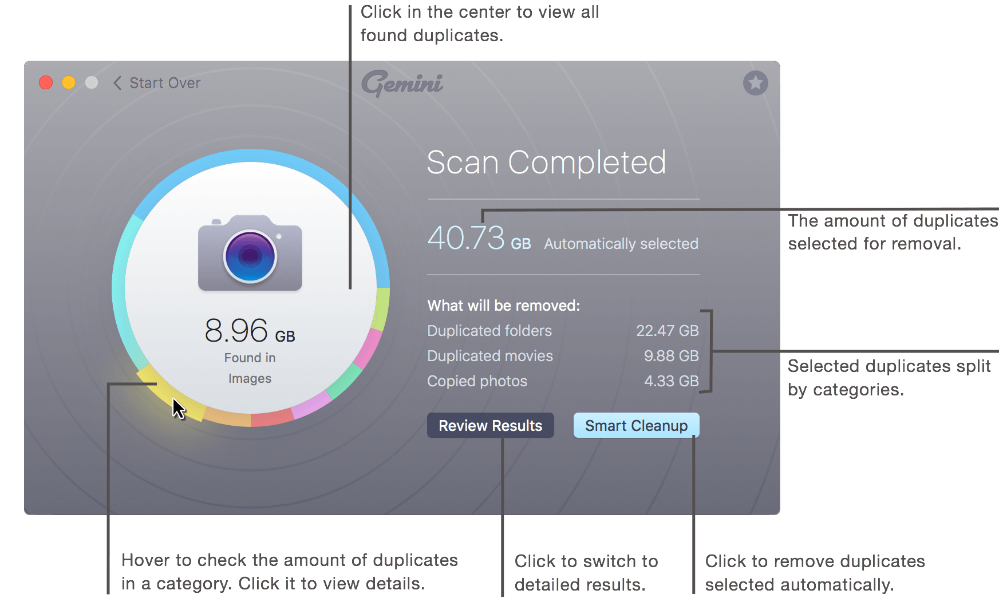
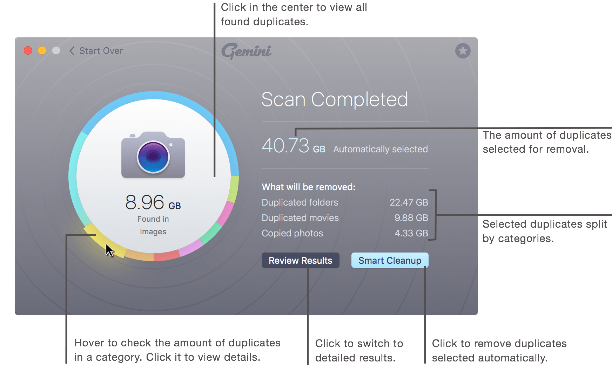

Summary
After the scanning process is completed, you are presented with a brief results screen. It shows a summary of found duplicates and allows you to instantly run Smart Cleanup, which removes only 100% safe duplicates by default.

See also:
After the scanning process is completed, you are presented with a brief results screen. It shows a summary of found duplicates and allows you to instantly run Smart Cleanup, which removes only 100% safe duplicates by default.

See also: